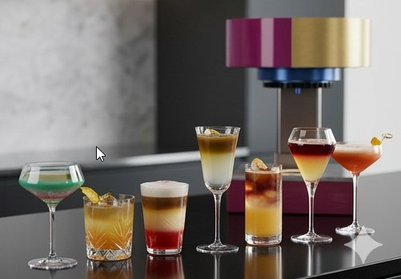
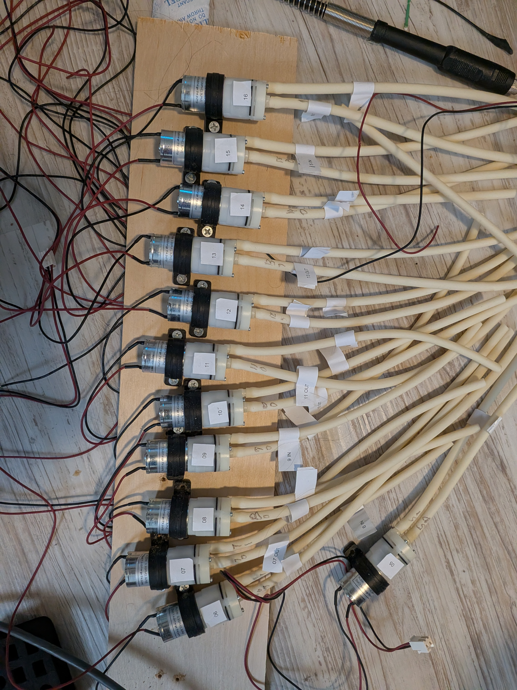
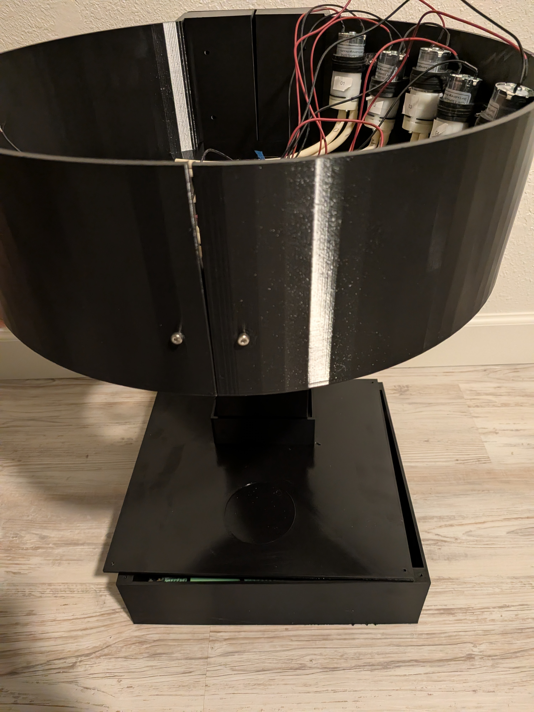
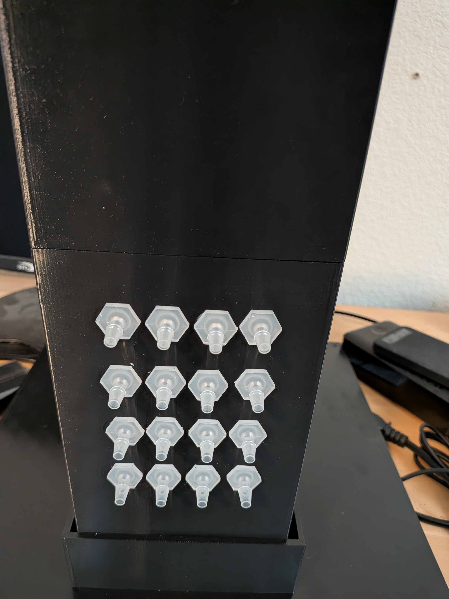

The Idea
MyHaloBar started as a software project, an app that lets you browse cocktails and place orders. But the whole point was always to connect it to real hardware that actually makes the drinks. This is the hardware side of that build.
The goal is a self-contained unit with peristaltic pumps, a microcontroller, and a clean enclosure that can sit on a countertop. You pick a drink in the app, and the hardware pours it. No bartender required.

The Stack
Software
- ESP32 / Arduino — microcontroller for pump control
- MQTT — communication with the app backend
- AWS IoT Core — cloud-to-device messaging
- Next.js app — frontend ordering interface
Hardware
- 16 peristaltic pumps — food-safe liquid dispensing
- Relay module — pump switching + sequencing
- 12V power supply — drives pump motors
- 3D-printed enclosure — Gemini-designed housing
How It Started
I started this project in 2023 using Home Assistant as the brains of the operation. It handled pump calibration, stored the recipes, and served as the user interface. Functionally, it worked. I could select a drink and the pumps would fire in the right order for the right duration.
But the interface was terrible. Home Assistant is great for home automation, not for building a consumer-facing drink menu. And the housing was a struggle. I was trying to design an enclosure from scratch with no real CAD experience, and it showed.

Where It Is Now
Fast forward to today and both of those problems are solved. The MyHaloBar app replaced Home Assistant entirely. The interface looks clean, the recipe management is proper, and the whole experience finally feels right.
For the housing, I brought in Google Gemini. I'd describe what I wanted (dimensions, bottle placement, pump routing, nozzle positions) and it would generate OpenSCAD code that I could 3D print. Iterate, adjust, reprint. It turned what was months of frustration into a much faster design loop.


The Build
The pump system uses 16 peristaltic pumps, one per ingredient. They're food-safe, self-priming, and volume is controlled by run duration. Each pump is wired through a relay module and driven by a 12V power supply. The microcontroller receives pour commands over MQTT via AWS IoT Core.
The dispensing nozzles are mounted on the front column in a 4x4 grid. Each one maps to a specific pump and ingredient. You place a glass underneath, order from the app, and the system sequences the pumps to build the drink.

What's Next
- Finalize pour calibration across different liquids
- End-to-end integration with the MyHaloBar app
- Final enclosure iteration and finish
- Add a drip tray and overflow detection